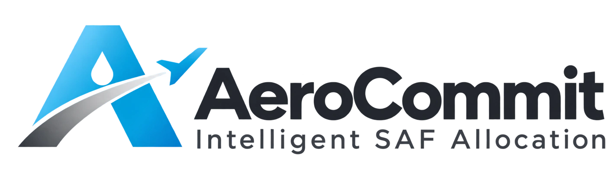

Balance cost and carbon.
Explore SAF allocations by departure airport and route. Compare fuel spending with expected lifecycle GHG reductions, and identify supply that should remain flexible.

Help airlines and fuel suppliers decide where to use limited sustainable aviation fuel (SAF). Compare cost, lifecycle emissions and delivery constraints—and see which commitments should stay flexible when conditions change.
Plan supply. Balance cost and carbon. Adapt to change.SAF is scarce and often more expensive than conventional jet fuel. AeroCommit brings fuel supply, airport demand, delivery limits and disruption assumptions into one planning workspace, so you can compare the consequences before committing.
Explore SAF allocations by departure airport and route. Compare fuel spending with expected lifecycle GHG reductions, and identify supply that should remain flexible.
Match available gallons with airport uptake and delivery capacity. Compare freight, contracted premiums and modeled credit value across destinations.
Test weather disruption and supply shortages alongside cost and GHG goals. Explore supplier mandate scenarios and see where modeled obligations remain uncovered.
See how supply, carbon goals and changing conditions shape the next commitment.
Gallons · Carbon intensity · Price
Supply + delivery + cost + GHG
Concept animation · Not live supply or flight data
Bring together available gallons, batch carbon intensity, prices, route demand and disruption assumptions.
Process overview · Recommendations depend on verified inputs and applicable program requirements. Planning holds are not executed supplier reservations.
Start with your role, then open the tools that support your next SAF commitment.
Bring route demand, fuel cost and lifecycle carbon goals into the same conversation.
Interface overview · Your inputs determine results.
Match available SAF with airport uptake, transport capacity and commercial priorities.
Interface overview · Eligibility requires verification.
Understand the planning tools and the data behind a recommendation.
It helps you compare where to allocate limited SAF, how much to commit, and what to keep flexible, using supply, delivery, cost, carbon and disruption assumptions.
No. Fuel may remain available for later use depending on storage, handling and contracts. The planner considers whether the planned uptake occurs within the decision period; it does not assume that a cancelled flight destroys fuel.
No. The directory contains documented supply evidence for US and European airports. Check the evidence status and date, and confirm available gallons, blend, delivery timing and eligibility with the supplier.
No. The tools provide planning estimates. Conditional holds are internal planning quantities, and policy screening does not establish certification or eligibility. Confirm documentation and commercial terms before execution.
Yes. Planning tools are available without an account. You can create an account and sign in using your email and password. Scenario saving remains local to this browser; signing in does not synchronize scenarios to cloud storage.
Explore the tools with your own supply, cost and carbon assumptions.
AeroCommit helps airlines and suppliers compare supply decisions, delivery constraints and lifecycle carbon outcomes in one workspace.
Compare departure-airport supply with route demand and disruption assumptions. Decide what to commit and what to keep flexible.
Explore the trade-off between SAF spending and expected lifecycle emissions reductions using your fuel and carbon inputs.
Allocate available batches across airport uptake and delivery lanes. Compare freight, premiums and modeled program value.
Explore SAF and carbon obligations using editable assumptions, and identify where a plan may leave a shortfall.
See aircraft near any airport in near real time, with an estimated SAF share and CO₂ avoided for each airline flight, based on your compliance plan. Flight data from public ADS-B feeds, credited on every update.
Your scenario controls and decision tools are below.
Planning tools support scenario analysis. Results do not execute orders, verify eligibility or issue certification.
Sustainability certification, fuel quality and policy eligibility are different checks. Track the requirements relevant to each batch and destination.
Organize sustainability, chain-of-custody and batch documentation against the applicable ISCC system and market requirements.
Sustainability & traceabilityReview sustainability and traceability documentation under the applicable RSB certification framework.
Sustainability & chain of custodyAssess the documentation and lifecycle emissions inputs needed when considering CORSIA eligible fuels.
Aviation emissions frameworkCheck fuel specifications, blending documentation and destination-specific program requirements separately from sustainability certification.
Batch & destination checksAeroCommit does not act as a certification body. This overview does not establish approval, certified status or program eligibility. Confirm requirements with the relevant scheme and qualified verifier.
AeroCommit is being developed to help airlines and fuel suppliers make more informed decisions about limited sustainable aviation fuel.
SAF supply, cost, logistics and carbon goals rarely line up perfectly. AeroCommit brings those competing priorities into a shared planning workspace so users can understand the consequences before committing supply.
Transparent assumptions, clear lifecycle carbon accounting and practical supply decisions. Disruption can change when fuel is used; a cancelled flight does not automatically mean its fuel is wasted.
The platform combines scenario planning with a documented SAF airport directory. Data coverage and connection status are identified inside each tool. Commercial execution, inventory verification and certification remain separate processes.
Tomorrow’s headline decisions. Open a section below to explore the detail.
Release deadlines in UTC, relative to delivery day.
Select an origin and destination, inspect risk, and review the SAF allocation.
SAF is uplifted at origin; destination conditions inform the outbound commitment.
Daily route groups for fictional airlines. Destination risk affects each route, not every departure from the origin.
| Airline / route group | SAF uplift | Destination outlook | Route risk | Firm / flexible | Decision |
|---|
Flight destinations and physical supply lanes, shown separately.
One row represents a daily group of flights. Departure is the earliest uplift-dependent departure; allow two hours to refuel. Arrival timing is a scenario assumption.
| Airline / group | Origin | Destination | SAF target (US gal) | En-route risk (%) | Departure UTC | Duration (h) |
|---|
Optimize the selected route’s fuel mix, then explore the conventional-fuel alternative.
Choose how much of this route’s allocated SAF tranche to retain. Compare tomorrow’s cash spend with expected lifecycle emissions.
This optimizes one selected route’s existing allocation, keeping its supplier mix fixed. It does not find a network-wide optimum or execute a reallocation. SAF quantities are neat-SAF-equivalent US gallons, not the complete aircraft fuel load; other fuel is unchanged. Both choices are evaluated using lifecycle CI, including the SAF emissions already represented in its CI.
For Q allocated US gallons and x US gallons retained as SAF: expected reduction = p × d × x × (comparator CI − SAF CI) × LHV × kg/US gal / 1,000,000. Expected tranche emissions = p × Q × comparator CI × LHV × kg/US gal / 1,000,000 − expected reduction. Cost = p × [x × (d × SAF price + (1 − d) × jet price) + (Q − x) × jet price] + (Q − x) × switching fee. For already-owned SAF, its purchase price is sunk and excluded from new cash spend; inventory value is not refunded.
p is the modelled probability of the route operating, and d is the probability that planned SAF reaches the aircraft (1 − origin delivery failure; 1 for SAF already owned). If SAF does not arrive, the flight uplifts conventional jet fuel at the jet price. p × d matches the planner’s P(planned uptake), so this tab and the overview report the same expected reduction for a route. Purchases are conditional on operation and arrival; switching fees apply regardless. Conventional jet fuel availability is assumed. Conditional holds are candidate quantities, not confirmed supply. Expected cash is not the budget required to fund a flight that operates. Later SAF use, holding/diversion burn, storage costs, carbon credits and compliance penalties are excluded. A user-declared contract lock restricts the mix to retaining all SAF; it is not an automated regulatory check.
Budget mode maximizes expected reduction subject to its cash ceiling. Target mode minimizes expected cash subject to the minimum reduction. Carbon-value mode minimizes cash plus internal carbon price × expected lifecycle emissions; this internal value is not a cash charge. Linear assumptions can produce an all-SAF or all-conventional recommendation.
Compare the selected route’s planned SAF tranche with conventional jet fuel. Other flight fuel is unchanged.
Edit supplier offers, airport assumptions, and delivery lanes. These inputs feed the same planning engine.
Recommendations update as you adjust.
Scenario-based neat SAF availability and lifecycle CI. Prices exclude lane freight.
Airport disruption is used at origin and destination. Supply delivery failure applies only at origin. Weather is a scenario-based daily outlook, not an arrival-time forecast.
| Airport | Outlook | Wind (kt) | Disruption (%) | Delivery failure (%) | SAF target / cap (US gal) | Receive by (delivery day, UTC) |
|---|
Latest release = receiving deadline − transit time. Lane capacity applies to firm plus conditional quantities.
| Supplier → airport | Transit (h) | Freight ($/US gal) | Capacity (US gal) | Latest release | Can wait? |
|---|
All outbound route allocations aggregate here. Shared supply is counted once.
| Airport / outlook | Origin risk | Firm | Flexible | Expected savings¹ | Decision |
|---|
Firm, conditional, and unassigned capacity.
Explore airport and FBO supply records, check the evidence, then bring an airport into your disruption scenario.
Directory checked 24 October 2026 · EUROCONTROL map updated 7 July 2026 · 4AIR record dates shown per location.
| Airport | Country / region | Supply evidence & provider | Plan |
|---|
Stack federal, state and EU/UK mandate value by destination, net of freight, and let an exact optimizer place every gallon. Compare against a credit-blind “nearest airport” plan.
Bars show value per gallon by source. Freight is already deducted from the total. The last column is what 10,000 more gallons of uptake at that airport would add per gallon.
| Airport | Program | Gallons placed | From | Net value per gallon | +10k gal uptake |
|---|
Penalties avoided count only up to your obligation.
Placed volume and what 10,000 more gallons of each batch would be worth.
| Batch | Placed | Unplaced | +10k gal |
|---|
Three CI values because programs score differently: LCFS pathway CI (CA/OR/WA), 45Z rate excluding ILUC, and ICAO/CORSIA CI including ILUC (RFS screen, MN, WA, EU, UK).
| Batch | Terminal | Volume (US gal) | Feedstock | Feedstock origin | LCFS CI | 45Z CI | ICAO CI | RFS pathway |
|---|
Uptake is the most each airport’s buyers will take this period. Premium is any contracted price above jet.
| Airport | Program | Uptake (US gal) | Premium ($/gal) |
|---|
Terminal to airport freight and the most each lane can carry this period. A batch ships only from its own terminal.
| From terminal | To airport | Freight ($/gal) | Capacity (US gal) |
|---|
Each batch–airport pair gets a per-gallon value: contracted premium − freight + RINs (US use only) + LCFS/CFP/CFS credits at that state’s benchmark + state SAF credit + 45Z (producer credit; North American feedstock only, so it does not steer destination). EU and UK gallons earn mandate value: the ReFuelEU minimum penalty avoided per gallon up to your obligation, and UK certificates (GHG-weighted per the DfT formula) at the buy-out price up to your obligation, then at your surplus sale price. Minnesota’s credit stops at the program cap while MN gallons keep their other value. The optimizer maximizes total value subject to batch volumes, airport uptake and lane capacity, and is compared with a plan that fills the cheapest-freight lanes first.
Simplifications: one CI per program family; RIN eligibility is a per-batch input; Illinois’ credit is claimed by airlines, so only the captured share counts; ReFuelEU shortfalls also carry into next year, so the penalty understates their cost; crop-based SAF never counts toward EU or UK mandates.
Decide how much SAF to contract, from whom and where, before the year starts. The plan is tested against weather seasons and supplier shortfalls, uses backups only when needed, and claims each tonne once against EU ETS, CORSIA or your own SAF target.
Left plans for the cheapest average year. Right gives more weight to the worst 10% of scenarios: costlier on average, much less exposed when storms and shortfalls hit together.
Recommended tonnes per offer, next to what a plan sized for an average year would sign. Take-or-pay on delivered volume; shortfall risk is the chance the supplier delivers only 20–80%.
| Supplier · airport | Price · CI | Shortfall risk | Recommended | Average-year plan |
|---|
Extra cost above the cheapest scenario, for this plan (bar) and the average-year plan (line). Rows are sorted from worst to best.
| Scenario | Shortfalls | Backups used | Extra cost | Total |
|---|
Expected tonnes by obligation. Each tonne counts once.
What binds airlines in each region, and what this plan models.
| Rule | Region | In this plan |
|---|
Annual fuel burn in metric tonnes and the airports where the fuel is uplifted. Mark which obligations each group carries.
| Group | Fuel (t/yr) | Uplift airports | EU ETS | CORSIA | Departs EU |
|---|
Delivered price per tonne at the airport, CI by the CORSIA method, and the yearly chance of a shortfall. Hurricane-exposed suppliers fail three times as often in severe seasons.
| Supplier | Airport | Max (t) | Price ($/t) | CI | Shortfall risk (%) | Hurricane exposed |
|---|
Bought only when a scenario needs it. Half as available and 30% dearer when two or more contracts fall short.
| Airport | Max (t/yr) | Price ($/t) | CI |
|---|
A two-stage stochastic linear program. Stage one picks contract tonnes. In each scenario, weather adds fuel burn (raising ETS and CORSIA obligations) and diverts uplift away from EU airports, suppliers deliver part of their contracts, and the plan claims each delivered tonne on one flight group at its airport: ETS flights save allowances (SAF counts as zero emissions) and earn SAF-allowance support; CORSIA flights cut offsets by 3.16 × (1 − CI/89) tCO₂ per tonne for fuel with at least 10% lifecycle reduction; every tonne counts toward the corporate target. Shortfalls are covered by spot SAF, book-and-claim certificates (target only), allowances, CORSIA units, or an internal target-gap cost. The objective blends expected cost with the average of the worst 10% of scenarios (CVaR).
Simplifications: no take-or-pay on undelivered volume; one CORSIA sector growth factor for all routes; SAF on each flight group is limited to a 50% blend split evenly across its airports; the ReFuelEU 90% uplift fine applies only if diversions exceed 10% of EU-departing fuel.
Aircraft near an airport from public ADS-B feeds, each with an estimated fuel burn, SAF share and CO₂ avoided. Departures of your airline carry the SAF your Compliance Plan puts at that airport; other flights carry an average you set.
Blue: your airline. Green: other airlines counted at the average share. Grey: not counted (faint: private or business aircraft). Hover an aircraft for details.
Departing means climbing within 60 km of the airport, so it fuelled there. Your airline’s other flights use the plan’s network average because their origin is unknown.
| Flight | Type | Altitude · speed | Phase | Fuel burn | SAF share | CO₂ avoided |
|---|
Every 15 seconds the page asks for aircraft within the chosen radius. Public ADS-B feeds only answer servers, not other websites, so the request goes through a relay: the AeroCommit server when you run npm start, or a relay you deploy from proxy/cloudflare-worker.js and paste above. The relay asks adsb.lol first and airplanes.live if adsb.lol does not answer, caches each area for 10 seconds and spaces calls to airplanes.live at least 1 second apart, as its free API requires. The feed behind each update is named and linked above the map. If none answers, the page shows simulated traffic and says so. Only airline flights are counted; private, business and training aircraft are listed but left out of the totals. Each airborne aircraft gets a typical cruise burn for its type (2,500 kg/h when the type is unknown). Its SAF share comes from your Compliance Plan when it is your airline (the contracted tonnes at the departure airport divided by the fuel your flight groups uplift there), or from the average you set for other airlines. CO₂ avoided per hour = burn × SAF share × 3.16 × (1 − CI/89). The running total adds up the hourly rate between updates while the tab is open.
Limits: ADS-B gives no origin or destination, so phases are inferred from altitude, climb rate and distance; burn rates ignore phase of flight, load and weather; the demo plan belongs to a fictional airline, so choose the real carrier you want to treat as running on it.
Flight data credits. adsb.lol: data © adsb.lol contributors, available under the Open Database License 1.0. airplanes.live: free REST API, used under its API terms for non-commercial use, rate limited to 1 request per second. Commercial deployments use adsb.lol only (FLIGHT_FEEDS=adsblol) unless airplanes.live has given permission. Aircraft positions are not stored.
Transparent assumptions, visible constraints, and a clear boundary between forecasts and evidence.
Each lane must meet the earlier of the origin receiving deadline and two hours before the route departure. Both firm allocations and conditional holds share supplier stock, origin and route target caps, lane capacity, and total budget.
Firm allocations must be releasable at the planning clock. Holds must be releasable at the later of the planning clock and reassessment time.
Divisible US gallons are allocated by an exact linear program, solved in the browser with no external service.
Stage 1 commits firm volume subject to supplier stock, origin and route caps, lane capacity, the purchase budget, the risk threshold and the minimum non-firm share. Stage 2 then maximizes conditional holds from whatever remains. Each stage is a proven optimum for its objective; ties go to the cheaper delivered supply. Firm volume is prioritized over holds, so the two-stage result is lexicographic rather than a single joint optimum.
The original greedy ranking (savings × probability ÷ delivered price) is kept as a baseline. It can strand cheap, low-CI supply on one route when another route has no alternative supplier; the linear program avoids this. The CSV export reports both.
CI is in gCO₂e/MJ; LHV is in MJ/kg. The comparison assumes equal-energy substitution and aligned lifecycle boundaries. Net supplier CI is an input; allocation and production modeling are outside this prototype.
Volume conversion assumes 0.80 kg/L for SAF and conventional fuel: 1 US gal = 3.785411784 L; 1 metric tonne ≈ 330.22 US gal. Actual batch density should replace this screening assumption in operational use. Defaults 89 gCO₂e/MJ and 43 MJ/kg are screening assumptions, not a regulatory eligibility determination. Contrail effects are excluded.
Combined route disruption = 1 − (1 − origin risk) × (1 − destination risk) × (1 − en-route risk). This simplifying independence assumption can be wrong when weather affects several airports, the route, and logistics together. These inputs represent disruption preventing the planned SAF uptake, not any minor delay. Wind and hazard labels do not directly calculate probabilities. Disruption means the planned uplift does not occur on the delivery day; it does not mean fuel is destroyed or lifetime savings disappear.
Flexible quantities are internal planning holds with full purchase cost ring-fenced. They are not purchased options, guaranteed supplier reservations, or executed orders. No option fees, cancellation penalties, storage costs, contract minima, or cross-day inventory are modeled.
Timestamped weather and airport advisories; airline fuel demand; supplier inventory and quotes; contractual release windows; certified batch CI and retirement records. This prototype has no live feeds. Saving a scenario stores it only in this browser.